Создание дороги
Перейдите к Создать объекты → Разное → Дорога. Как и все инструменты в Разное категорию, нажмите, чтобы активировать ее.
С Дорожный инструмент выбран, щелкните местность, чтобы разместить начальную точку, которая является первой ключевой точкой дороги.
Продолжайте нажимать, чтобы разместить ряд точек, которые составят дорогу. Чем больше точек размещено, тем выше степень контроля над общим направлением, кривизной и высотой дороги.
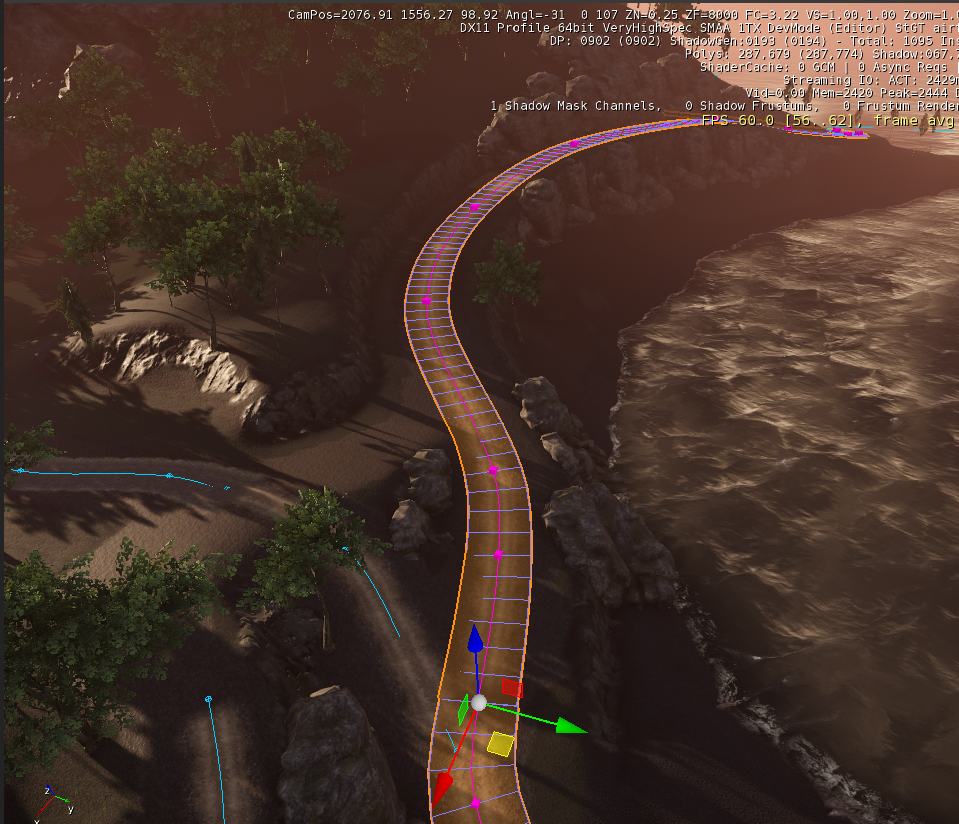
Дорога в процессе
А пока просто размещайте точки на разной высоте и не беспокойтесь о пустом или отсутствующем ландшафте под дорогой.
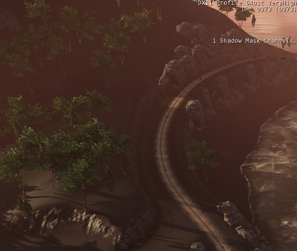
Дорога завершена
Чтобы установить последнюю точку, double клик желаемое место.
Настройка материала
Настройки материала для дорог
Дороги — это, по сути, декали, расположенные вдоль сплайна, поэтому настройка материалов довольно похожа, с некоторыми дополнениями.
В материале необходимо использовать Освещенный шейдер. Следует также использовать наклейка и Цвета вершин флажки в параметрах генерации шейдеров:
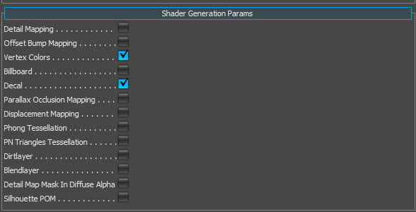
Выбраны цвета вершин и декаль.
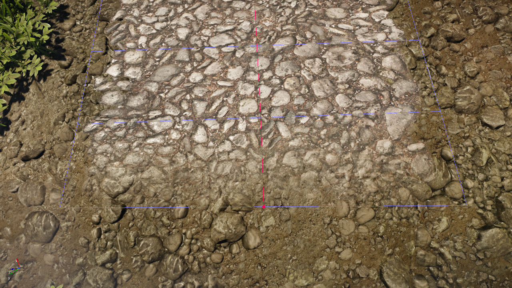 | 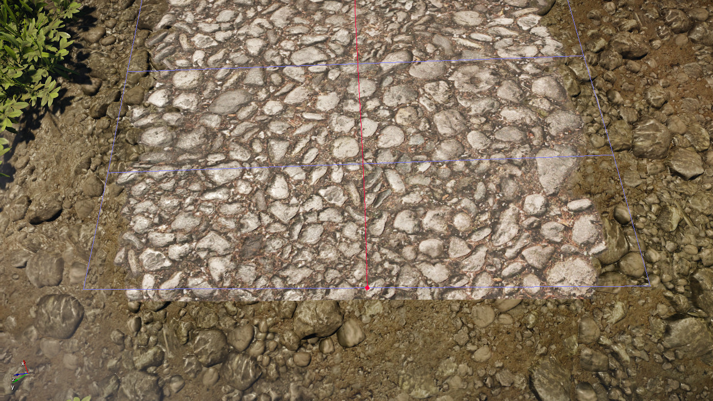 | 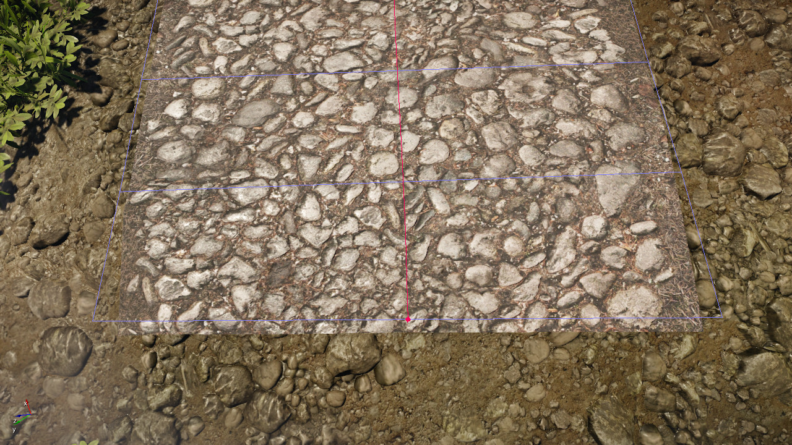 |
| Цвета декалей и вершин включены | Цвета вершин отключены | Цвета декалей и вершин отключены |
|---|
Как показано выше, использование опций «Наклейка» и «Цвет вершин» позволяет добиться хорошего слияния с ландшафтом.
- Наклейка: Активация этого параметра позволяет использовать альфа-смешение по обочинам дороги, которое происходит из альфа-канала диффузной текстуры.
- Цвета вершин: Активирует плавное затухание на каждом конце дороги. Это затухание от 100% до 0% на протяжении последнего шага. Текстуры/Альфа-канал не влияют на затухание.
Установка значения непрозрачности материала на 99 % или меньше также активирует альфа-смешение, позволяя получить гораздо больший контроль над материалом, установив его на 100 %, а затем используя параметры Decal.
Применение материала к дороге
До сих пор дорога показывала свой сплайн-помощник только поверх существующей текстуры местности.
Чтобы задать материал, выберите объект дороги и на панели «Свойства» щелкните значок Материал поле под Общий раздел.
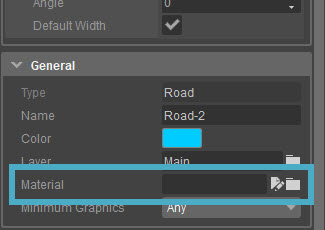
Поле материала
После выбора материала нажмите кнопку Назначить материал выделению кнопка (или щелкните правой кнопкой мыши и Назначить выбранным объектам).
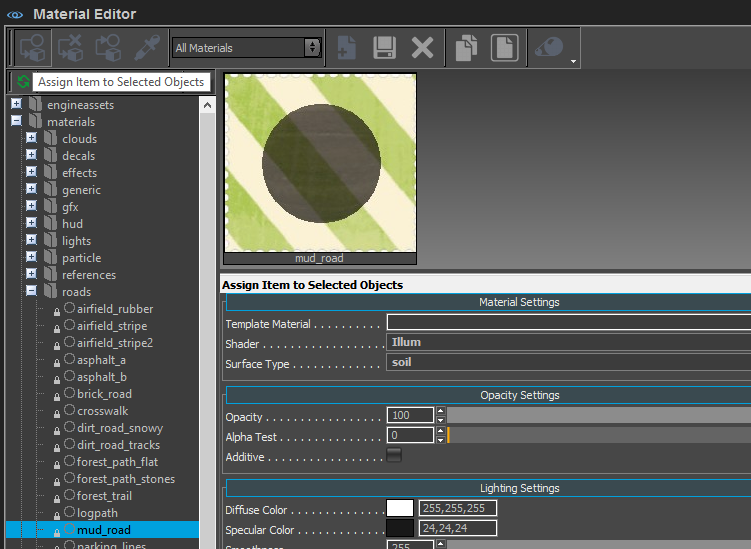
Назначение материала
Текстура теперь будет применена к текстуре местности. Текстура всегда проецируется на поверхность ниже геометрии, определяющей дорогу. Таким образом, дорога не обязательно должна быть идеально выровнена по поверхности местности.
Сегменты дороги между ключевыми точками пытаются сгладить изгибы дороги, придав ей более реалистичный вид.
Изменение дороги
После размещения дороги ее можно легко изменить с помощью набора инструментов.
Функция | Описание |
|---|---|
Редактирование формы | Редактировать позволит изменить, добавить(CTRL + LMB в строке) или удалить (double-нажмите на точке) точки на линии формы дороги. |
Угол | Устанавливает угол дороги на точку. |
Ширина | Устанавливает ширину дороги на точку. |
Сплит | Разбивает дорогу в точке щелчка. |
Объединить | Соединяет две дороги. Дороги можно объединять только в начальных или конечных узлах. |
Выровнять карту высот | Изменяет геометрию местности в зависимости от формы дороги и параметра ширины ее границы. |
Нажмите Редактировать под Сплайновые операторы в Свойства дороги.
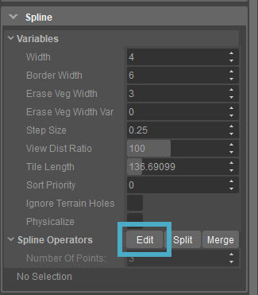
Кнопка «Редактировать сплайн»
Каждую ключевую точку на дороге теперь можно редактировать.
Когда режим редактирования сверху активен, также можно привязать отдельные точки к местности так же, как и объекты: нажав Ctrl + Shift + LMB в любой точке местности.
Позиции X, Y или Z можно изменить отдельно, X и Y вместе, либо ключевую точку можно переместить поверх местности. Для этого выберите на панели инструментов один из режимов блокировки оси.
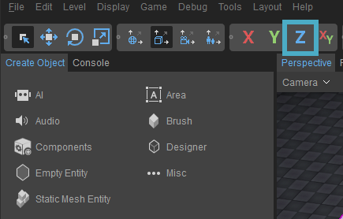
Z Кнопка ограничения
Теперь щелкните ключевую точку дороги и перетащите ее в новое положение. Выбор Блокировка оси Z Режим позволяет изменить высоту этой ключевой точки, чтобы вручную сгладить дорогу, если конкретный участок слишком крутой.
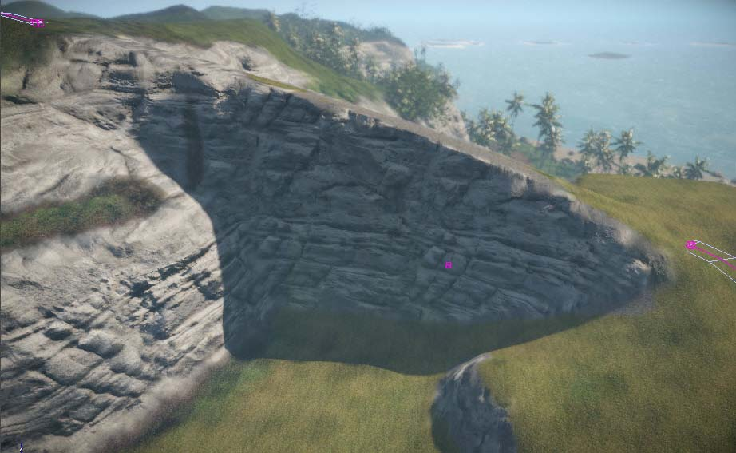
Рисование дороги
С Выровнять карту высот а изменив ключевые точки, дорогу можно разместить именно там, где она должна быть.
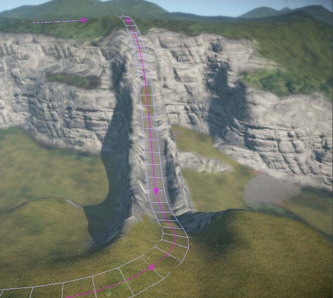
Карта высот выровнена
В Редактировать режиме есть возможность выбора отдельных точек дороги. Отмена выбора Ширина по умолчанию позволит ввести определенную ширину дороги в этой точке в поле ввода ниже.
Разделение дорог
В некоторых случаях дорогу необходимо разделить на несколько сегментов. Этого можно легко добиться, используя Сплит функции в дорожном хозяйстве Свойства.
Выберите дорогу, которую необходимо разделить. Теперь активируйте Сплит в свойствах дорожного инструмента.
Режим редактирования дороги
Сплайн-клавиши изменят цвет на розовый, что означает, что они включены. Редактировать режим; в противном случае они были бы окрашены в зеленый цвет.
При активированной функции разделения выберите одну из клавиш, ближайших к месту разделения дороги.
Дорога разделена
Теперь дорога разделена и создан новый экземпляр отсеченной дороги.
Новая дорога резко обрывается, потому что последний ключ сплайна на этой дороге расположен рядом с предпоследним, что приводит к преждевременному прекращению исчезновения дороги.
Зайдите в Редактировать режим на вновь созданной дороге и перетащите последний ключ сплайна поверх другой дороги, чтобы красиво смешать их вместе.
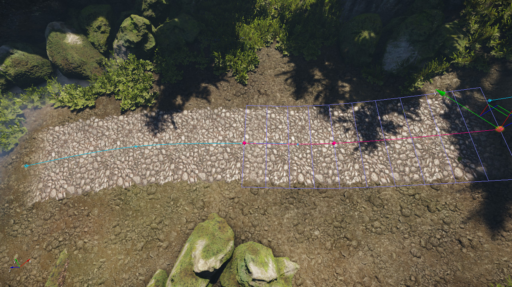
Две дороги вместе взятые